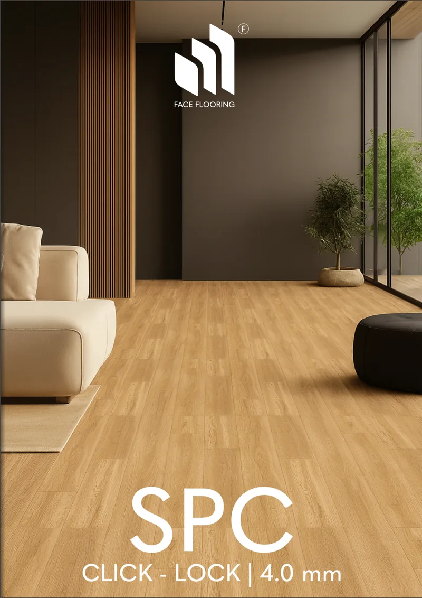

YOUR SPACE.
YOUR STORY.
เปลี่ยนผนังให้สวย เปลี่ยนพื้นให้ใช่
เติมเต็มทุกพื้นที่ในสไตล์ของคุณ
Two surfaces.
One vision.
เพราะทั้งผนังและพื้นต่างสร้างความรู้สึกให้พื้นที่ของคุณ เลือกค้นพบวัสดุและแรงบันดาลใจที่ใช่กับ FACEWALL


THE BEAUTY
OF THE WALL.
ผู้ช่วยรังสรรค์
พื้นที่สวยในแบบคุณ
FACEWALL เข้าใจว่าผนังและพื้นไม่ได้เป็นเพียงองค์ประกอบของบ้าน แต่ช่วยสร้างบรรยากาศและสะท้อนสไตล์ของผู้อยู่อาศัย เราจึงตั้งใจคัดสรรวัสดุตกแต่ง พร้อมแนะนำ สำรวจหน้างาน และติดตั้งโดยทีมช่างมืออาชีพ
Little changes.
Big feelings.
ลองลากแถบเพื่อชมการเปลี่ยนบรรยากาศของห้อง ก่อนเข้าสู่แกลเลอรี Before / After ของเรา

 BEFOREAFTER↔
BEFOREAFTER↔See the
difference.
ทุกพื้นผิวมีส่วนเปลี่ยนความรู้สึกของห้อง สัมผัสประสบการณ์ Before / After แล้วเลือกชมหมวด Wallpaper หรือ Flooring
Explore our showcase หมายเหตุ: ภาพเปรียบเทียบใน Draft 02 เป็นภาพจำลองเพื่อสาธิตฟังก์ชัน ไม่ใช่ผลงานติดตั้งจริงFind your
next favorite.
เปิดโลกของลวดลายและพื้นผิว ผ่าน eCatalog ที่เลือกอ่านได้ตามคอลเลกชัน ไม่ต้องค้นหาสินค้าทีละรหัส
 WALLPAPER COLLECTIONS ↗
WALLPAPER COLLECTIONS ↗
FLOORING COLLECTIONS ↗eCatalog ตัวอย่างที่พร้อมเลือกชมใน Draft นี้
เพิ่มหนังสือใหม่ได้ในอนาคต
Details make
the difference.
งานตกแต่งที่ดีไม่ได้จบที่การเลือกวัสดุสวย แต่เริ่มจากความเข้าใจหน้างานและการติดตั้งอย่างใส่ใจ
Material Selection
ตัวอย่างวัสดุให้เลือกทั้งออนไลน์และออฟไลน์ ช่วยค้นหาสี ลวดลาย และผิวสัมผัส
Free Consultation
ให้คำปรึกษาและแนะนำวัสดุตามความต้องการโดยไม่มีค่าใช้จ่าย
Free Site Measurement
บริการเข้าวัดพื้นที่หน้างานฟรี ในพื้นที่ให้บริการตามที่กำหนด
Professional Installation
ทีมช่างมืออาชีพ ดูแลการติดตั้งจนงานสวยงามพร้อมใช้งาน
READY FOR
A CHANGE?
คิดจะเปลี่ยนผนังหรือเปลี่ยนพื้น ให้ FACEWALL ช่วยดูแล
ปรึกษาและนัดวัดพื้นที่ฟรี